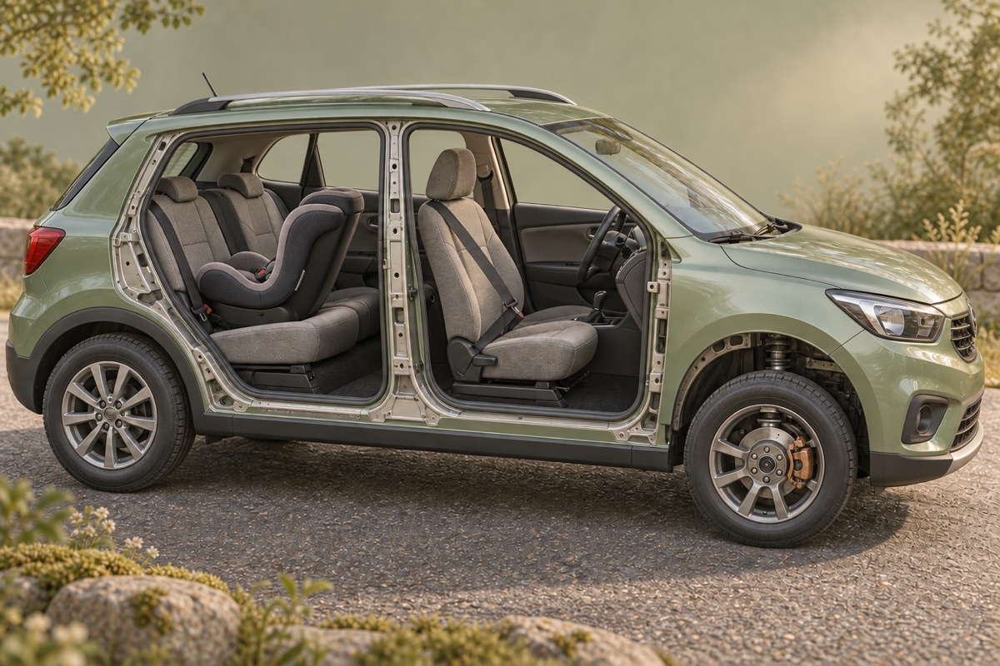

刹车片和刹车盘
刹车片夹住随车轮转动的金属盘，摩擦让车轮慢下来。运动的能量主要变成热，所以刚用过的刹车装置可能很烫，不能伸手摸。

从发现情况到真正停下
先选速度和路面，再点播放。金色的一段是司机还在反应，绿色的一段才是刹车后走过的路。
只比较教学情景：反应时间固定 1 秒，干燥和湿滑路面的减速度分别设为 6 和 3 米/秒²，均非实测。播放时间经过缩放；数字不能用来判断实际驾驶距离。
两个接触面，各有工作
车向右，刹车时地面的摩擦力向左。部件大小为示意。
刹车片夹住随车轮转动的金属盘，摩擦让车轮慢下来。运动的能量主要变成热，所以刚用过的刹车装置可能很烫，不能伸手摸。
轮胎还要抓住地面，地面才能通过摩擦让整辆车减速。正常滚动而不打滑时，轮胎接地点与地面没有相对滑动，主要是静摩擦，并不是“边滑边擦”。
湿滑路面常让轮胎较难抓地。本例只减小减速度，你会看到绿色的路变长；司机反应那一段并没有消失。
车停，身体也要一起停
车和人原本一起向前。车开始减速，身体仍有保持原来运动的趋势，这叫惯性。需要安全带或安全座椅施加作用，身体才会随车慢下来。
成人佩带位置示意；不显示碰撞或伤害。虚线箭头是原先运动方向，不是惯性力。
安全带的作用分散在较结实的身体部位。与身体直接撞上车内硬物相比，约束系统配合车辆吸能结构，让减速发生在较长时间和距离内。
贴合才来得及帮忙。不能故意放松带子来“延长时间”，也不能把肩带放在腋下或背后。
身体还在长，保护也要合身
小朋友的身体大小和比例与成人不同，普通车座和安全带可能还不合身。合适的儿童座椅把身体放在合适的位置，让保护真正用得上。不是抱紧就能代替。
每一程都在后排正确使用合适的保护。由大人同时查看儿童座椅和汽车说明书，核对身高、体重、年龄要求、安装方向与固定方式。图画不代替安装说明，也不按一个生日自动“升级”。
小朋友能做的：坐好，等大人检查扣紧；行车时保持坐姿，不解开扣子。
匀减速示意取 v = 速度 ÷ 3.6，反应距离 dᵣ = vtᵣ，制动距离 dᵦ = v²/(2a)。在本例相同路面、相同减速度下，速度翻倍，反应距离翻倍，制动距离变成四倍；总停车距离不一定是四倍。汽车完全停止后不会反向移动。
惯性是物体保持运动状态的性质，不是额外向前的力。乘员减速需要真实的外力；本页不计算人体受力、变形或伤害。冲量关系 F平均 × Δt = Δp 解释了为什么同样的动量变化，分配在更长时间内可以降低平均力，但不能据此推算峰值受力或保护百分比。
理想无滑动轮胎接地点的静摩擦不因“车在前进”就自动变成滑动摩擦；它把路面对轮胎的作用传给汽车。常规摩擦制动主要在刹车装置中将机械能转成内能。真实轮胎会变形、局部滑移；ABS 调节制动力以减少车轮抱死，但不能保证在所有路面缩短停车距离。电动或混合动力车辆也可能通过再生制动回收部分能量。
儿童应在产品允许的身高、体重范围内尽可能保持后向；前向座椅继续使用内置安全带，并按座椅与车辆说明使用上拉带或规定的防旋转装置。增高座椅让车辆的三点式安全带正确经过肩胸和髋部。只有达到适用要求、能够全程正确坐好，并且车辆安全带真正贴合，才考虑相应转换。后向座椅不能放在有启用前排气囊的位置。
这是一组屏幕内的原理比较，不是驾驶训练、产品推荐或本地法规清单。真实停车还受反应时间、坡度、轮胎、积水、冰雪、刹车温度与车辆状态影响；不据图上数字跟车，不在道路上尝试刹车实验。保护示意不包含伤害或存活概率。
儿童乘车建议根据下列 NHTSA 与 CDC 一手资料核对；实际使用还须遵循产品说明与当地要求。资料核对：2026 年 9 月 12 日。